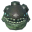
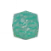
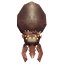

Trophées
Trophées dans Valheim – 67 objets avec biome, provenance, outil requis, recette et utilisation.
Aucun objet trouvé.
 Kvastur
Kvastur
Le meilleur ami des sorcières.
Provenance
- Butin de: Kvastur · Marécages
 Trophée d'abomination
Trophée d'abomination
Cela fait si longtemps qu'il est mort, qu'il s'est remis à vivre.
Provenance
- Butin de: Abomination · Marécages · 50 % de chance
Utilisation
- Ingrédient pour: Appât de pêche odorant
 Trophée d'archer
Trophée d'archer
Ces jambes pourraient renfermer un pouvoir infini.
Provenance
- Butin de: Archer calciné · Terres de cendres · 5 % de chance

Trophée d'asksvinNe vous laissez pas duper par son sourire avenant, car il pourrait bien vous arracher le bras.
Provenance
- Butin de: Asksvin · Terres de cendres · 10 % de chance
Utilisation
- Matériau de construction pour: Couronne de plumes
 Trophée d'Eikthyr
Trophée d'Eikthyr
Cette tête coupée regorge de puissance. Offrez-la aux Pierres sacrificielles.
Provenance
- Butin de: Eikthyr · Prairies
 Trophée d'elaking
Trophée d'elaking
De vilains petits yeux vous fixent.
Provenance
- Butin de: Elaking · Prairies, Forêt noire, Marécages, Montagne, Plaines, Terres brumeuses, Terres de cendres, Grand nord, Océan · 10 % de chance
 Trophée d'élan
Trophée d'élan
Le puissant roi des forêts du nord.
Provenance
- Butin de: Élan · Grand nord · 10 % de chance
Utilisation
- Ingrédient pour: Coiffe de l'orateur, Mande-esprits, Moulage : coiffe de l'orateur, Moulage : Mande-esprits, Perce-cou
- Matériau de construction pour: Trône de bois de cerf
 Trophée d'excroissance
Trophée d'excroissance
Un tas noir et collant.
Provenance
- Butin de: Excroissance · Plaines · 10 % de chance
Utilisation
- Ingrédient pour: Bombe de blob : goudron
 Trophée d'Hexen
Trophée d'Hexen
Avant sa mort, la magie brillait dans ses yeux. Désormais, ils sont vides et creux.
Provenance
- Butin de: Hexen · Prairies, Forêt noire, Marécages, Montagne, Plaines, Terres brumeuses, Terres de cendres, Grand nord, Océan · 10 % de chance
Utilisation
- Ingrédient pour: Couronne de sorcière, Moulage : Vengeance nordique, Vengeance nordique
 Trophée d'ours
Trophée d'ours
Ces yeux sont toujours terrifiants...
Provenance
- Butin de: Ours · Forêt noire · 10 % de chance
Utilisation
- Ingrédient pour: Coiffe de l'ours, Pendentif en bronze
- Matériau de construction pour: Tapis en peau d'ours
 Trophée d'ours maudit
Trophée d'ours maudit
Un regard des plus vides...
Provenance
- Butin de: Ours maudit · Plaines · 10 % de chance
Utilisation
- Ingrédient pour: Visage d'ours maudit
 Trophée de barka
Trophée de barka
La tête gelée d'un arbre autrefois vivant.
Provenance
- Butin de: Barka · Grand nord · 10 % de chance
 Trophée de berserker gobelin
Trophée de berserker gobelin
Cette énorme tête grisonnante est aussi lourde qu'un gros rocher.
Provenance
- Butin de: Berserker gobelin · Plaines · 5 % de chance
- Détruire: Village du Nord · 1,1 % de chance
Utilisation
- Ingrédient pour: Voile d'ombre
 Trophée de blob
Trophée de blob
Un tas de matière puante.
Provenance
- Butin de: Oozer · Marécages · 10 % de chance
- Butin de: Blob · Marécages · 10 % de chance
Utilisation
- Ingrédient pour: Bombe de blob : poison, Bombe de blob : poison avancé

Trophée de blobLes restes d'aventuriers malchanceux qui ont été digérés et gélifiés avec le temps.
Provenance
- Butin de: Pâte sans forme · Grand nord · 10 % de chance
Utilisation
- Ingrédient pour: Bombe de blob : blob
 Trophée de blob de lave
Trophée de blob de lave
C'est probablement mort. Enfin...
Provenance
- Butin de: Blob de lave · Terres de cendres · 10 % de chance
 Trophée de Brenna
Trophée de Brenna
Son feu couve toujours.
Provenance
- Butin de: Brenna · Forêt noire
 Trophée de brute naingris
Trophée de brute naingris
7 coups auront été nécessaires pour ôter cette tête nouée à son corps.
Provenance
- Butin de: Brute naingris · Forêt noire · 10 % de chance
- Détruire: Village du Nord · 5,3 % de chance
 Trophée de cadavre rance
Trophée de cadavre rance
Un crâne pourri. Vous ne savez pas trop pourquoi vous l'avez gardé...
Provenance
- Butin de: Cadavre rance · Forêt noire · 10 % de chance
 Trophée de cerf
Trophée de cerf
Un joli spécimen, mais vous devrez tuer plus que des cerfs pour entrer au Valhalla.
Provenance
- Butin de: Cerf · Prairies, Forêt noire · 50 % de chance
Utilisation
- Ingrédient pour: Brise-cerf, Corne d'hydromel d'Odin
- Invoque le boss: Eikthyr (2 ×)
 Trophée de Chaman Gobelin
Trophée de Chaman Gobelin
Même la mort n'a pas pu effacer ce sourire rusé de ses lèvres tordues...
Provenance
- Butin de: Chaman gobelin · Plaines · 10 % de chance
- Détruire: Village du Nord · 5,3 % de chance
 Trophée de chaman naingris
Trophée de chaman naingris
Il pourrait essayer de revenir, alors taillez bien vos nouvelles pousses...
Provenance
- Butin de: Chaman naingris · Forêt noire, Grand nord · 10 % de chance
Utilisation
- Ingrédient pour: Cœur de la forêt
 Trophée de cultiste
Trophée de cultiste
Le feu dans ses yeux ne s'est toujours pas éteint.
Provenance
- Butin de: Cultiste · Montagne · 10 % de chance
Utilisation
- Ingrédient pour: Capuche de Fenris
 Trophée de drac
Trophée de drac
Encore froid au toucher.
Provenance
- Butin de: Drac · Montagne · 10 % de chance
Utilisation
- Ingrédient pour: Appât de pêche gelé, Bombe de blob : givre, Casque de drac
 Trophée de draugr
Trophée de draugr
Couvrez lui la bouche s’il commence à murmurer la nuit...
Provenance
- Butin de: Draugr · Prairies, Marécages · 10 % de chance
 Trophée de draugr élite
Trophée de draugr élite
Le regard vide de ces yeux rouges et luisants vous donne des frissons.
Provenance
- Butin de: Élite draugr · Prairies, Marécages · 10 % de chance
- Détruire: Village du Nord · 5,3 % de chance
Utilisation
- Ingrédient pour: Masse de fer
 Trophée de dvergr
Trophée de dvergr
C'est un peu troublant que vous souhaitiez les exposer sur vos murs...
Provenance
- Butin de: Mage dvergr · Terres brumeuses · 5 % de chance
- Butin de: Brigand dvergr · Terres brumeuses, Terres de cendres · 5 % de chance
- Butin de: Dvergr emprisonné · Grand nord · 5 % de chance
 Trophée de Fader
Trophée de Fader
Le dragon vert, corrompu au-delà de toute rédemption. Offrez-le aux Pierres sacrificielles.
Provenance
- Butin de: Fader · Terres de cendres
 Trophée de fantôme
Trophée de fantôme
Parle-t-il toujours d'une tâche inachevée ?
Provenance
- Butin de: Fantôme · Forêt noire · 10 % de chance
 Trophée de fenring
Trophée de fenring
Moitié homme, moitié loup, son visage est défiguré par un rugissement de douleur.
Provenance
- Butin de: Fenring · Montagne · 10 % de chance
Utilisation
- Ingrédient pour: Appât de pêche froid, Vision du loup
 Trophée de fouineur
Trophée de fouineur
Moins délicats qu'ils en ont l'air. Le cuir de leurs ailes capte la lumière des flammes comme si elles espéraient encore voler.
Provenance
- Butin de: Fouineur · Terres brumeuses · 5 % de chance
Utilisation
- Ingrédient pour: Fers retentissants
 Trophée de Geirrhafa
Trophée de Geirrhafa
Elle vous envoie un regard glacial.
Provenance
- Butin de: Geirrhafa · Montagne
 Trophée de gjall
Trophée de gjall
Avec un peu de chance, il ne s'envolera pas.
Provenance
- Butin de: Gjall · Terres brumeuses · 30 % de chance
Utilisation
- Ingrédient pour: Boucles d'oreilles palpitantes
 Trophée de gobelin
Trophée de gobelin
Des plis lâches de peau verdâtre se sont rassemblés autour d'une paire de yeux sombres et détestables.
Provenance
- Butin de: Gobelin · Plaines · 10 % de chance
Utilisation
- Ingrédient pour: Appât de pêche piquant
 Trophée de golem de pierre
Trophée de golem de pierre
Cette formation de roche cristallisée ferait une décoration impressionnante.
Provenance
- Butin de: Golem de pierre · Montagne · 5 % de chance
Utilisation
- Ingrédient pour: Cœur de cristal
 Trophée de guerrier
Trophée de guerrier
Ce crâne est recouvert de fractures, comme s'il avait essuyé de nombreux coups au fil des années.
Provenance
- Butin de: Guerrier calciné · Terres de cendres · 5 % de chance
Utilisation
- Ingrédient pour: Appât de pêche chaud
- Matériau de construction pour: Coffre en grise-pierre
 Trophée de gueule-d'os
Trophée de gueule-d'os
Un crâne composé d'os denses, aussi dangereux que protecteur.
Provenance
- Butin de: Gueule-d'os · Terres de cendres · 33 % de chance
 Trophée de krigen
Trophée de krigen
Autrefois un puissant guerrier, il n'en reste aujourd'hui qu'une enveloppe vide.
Provenance
- Butin de: Krigen · Prairies, Forêt noire, Marécages, Montagne, Plaines, Terres brumeuses, Terres de cendres, Grand nord, Océan · 10 % de chance
 Trophée de l’Aîné
Trophée de l’Aîné
Cette tête coupée regorge de puissance. Offrez-la aux Pierres sacrificielles.
Provenance
- Butin de: L'Aîné · Forêt noire
 Trophée de la Reine
Trophée de la Reine
Elle en a assez vu.
Provenance
- Butin de: La Reine · Terres brumeuses
 Trophée de lièvre
Trophée de lièvre
On dit que ce sont des porte-bonheurs, mais ça n'a pas marché pour leur propriétaire d'origine.
Provenance
- Butin de: Lièvre · Terres brumeuses · 5 % de chance
 Trophée de loup
Trophée de loup
Gelé dans la mort, la fourrure teintée de sang et un hurlement silencieux logé dans sa gorge.
Provenance
- Butin de: Loup · Montagne · 10 % de chance
Utilisation
- Ingrédient pour: Cape en fourrure de loup
- Matériau de construction pour: Pont-levis rustique
 Trophée de lox
Trophée de lox
Une tête de bête géante, couverte d'une épaisse fourrure.
Provenance
- Butin de: Lox · Plaines · 10 % de chance
Utilisation
- Ingrédient pour: Appât de pêche brumeux, Peau de fer
 Trophée de Masse-d’Os
Trophée de Masse-d’Os
Des os et une substance visqueuse, maintenus ensemble par une force invisible. Offrez-la aux Pierres sacrificielles.
Provenance
- Butin de: Masse-d'Os · Marécages
 Trophée de Moder
Trophée de Moder
La tête d'un dragon, majestueux jusque dans la mort. Offrez-la aux Pierres sacrificielles.
Provenance
- Butin de: Moder · Montagne
 Trophée de morgen
Trophée de morgen
Ce cauchemar ambulant n'est plus.
Provenance
- Butin de: Morgen · Terres de cendres · 5 % de chance
Utilisation
- Ingrédient pour: Cœur ardent
 Trophée de morstique
Trophée de morstique
Même mort, il est déconseillé de toucher cette chose.
Provenance
- Butin de: Morstique · Plaines · 5 % de chance
 Trophée de naingris
Trophée de naingris
La tête moussue et tranchée d’un Naingris.
Provenance
- Butin de: Naingris · Prairies, Forêt noire, Grand nord · 5 % de chance
- Détruire: Village du Nord · 10 % de chance
 Trophée de Nixe
Trophée de Nixe
Ses yeux globuleux et ses dents acérées contrastent avec la nature excessivement calme de ce petit lézard.
Provenance
- Butin de: Nixe · Prairies · 5 % de chance
 Trophée de phoque
Trophée de phoque
Cet animal n'a jamais fait de mal à qui que ce soit et pourtant, il a connu une fin précoce.
Provenance
- Butin de: Phoque · Grand nord · 10 % de chance
 Trophée de sanglier
Trophée de sanglier
Cette tête de sanglier sera parfaite pour décorer une maison.
Provenance
- Butin de: Sanglier · Prairies · 15 % de chance
 Trophée de sangsue
Trophée de sangsue
Bien que gluante, cette peau est ornée de superbes motifs rouges et noirs.
Provenance
- Butin de: Sangsue · Marécages · 10 % de chance
Utilisation
- Ingrédient pour: Broche en fer
 Trophée de Sans yeux
Trophée de Sans yeux
Se faire écharper par ces griffes doit être extrêmement désagréable.
Provenance
- Butin de: Sans yeux · Grand nord · 10 % de chance
 Trophée de serpent
Trophée de serpent
Ses écailles se sont ternies, mais ses yeux sont toujours brillants.
Provenance
- Butin de: Serpent de mer · Océan · 33 % de chance
Utilisation
- Ingrédient pour: Aileron du destin, Appât de pêche lourd
 Trophée de soldat fouineur
Trophée de soldat fouineur
La tête d'un champion déchu.
Provenance
- Butin de: Soldat fouineur · Terres brumeuses · 5 % de chance
- Détruire: Village du Nord · 5,3 % de chance
 Trophée de sorcier
Trophée de sorcier
Une lueur chaleureuse semble presque en émaner. À manipuler avec précaution.
Provenance
- Butin de: Sorcier calciné · Terres de cendres · 5 % de chance
 Trophée de spectre
Trophée de spectre
La peau d’un spectre, une robe uniquement visible au clair de lune.
Provenance
- Butin de: Spectre · Marécages · 5 % de chance
 Trophée de squelette
Trophée de squelette
Le rictus inexpressif de ce crâne vous rappelle le caractère inéluctable de la mort.
Provenance
- Butin de: Squelette · Prairies, Forêt noire, Marécages, Montagne, Plaines, Grand nord · 10 % de chance
Utilisation
- Ingrédient pour: Écu en os, Éveil des morts
- Matériau de construction pour: Bougies éternelles
 Trophée de surtling
Trophée de surtling
Couronné de flammes pâles, il continue de brûler comme une braise.
Provenance
- Butin de: Surtling · Marécages · 5 % de chance
Utilisation
- Ingrédient pour: Bracelet de cheville
 Trophée de Thungr
Trophée de Thungr
On fait moins le gros dur, maintenant.
Provenance
- Butin de: Zil et Thungr · Plaines

Trophée de tiqueLe pinacle de votre collection...
Provenance
- Butin de: Tique · Terres brumeuses · 5 % de chance
 Trophée de troll
Trophée de troll
D’anciens symboles ternis par le temps ornent cette peau coriace.
Provenance
- Butin de: Troll · Forêt noire · 50 % de chance
Utilisation
- Ingrédient pour: Appât de pêche moussu, Bâton des trolls
 Trophée de valkyrie déchue
Trophée de valkyrie déchue
Même dans la mort, elle souhaite que coule le sang.
Provenance
- Butin de: Valkyrie déchue · Terres de cendres · 5 % de chance
Utilisation
- Ingrédient pour: Jörmundling
 Trophée de voltour
Trophée de voltour
Cette espèce ressemble à un vautour, mais prospère dans les climats volcaniques.
Provenance
- Butin de: Voltour · Terres de cendres · 10 % de chance
 Trophée de warg
Trophée de warg
Une queue robuste d'un gros chien pas si gentil.
Provenance
- Butin de: Warg · Montagne · 10 % de chance
 Trophée de writhan
Trophée de writhan
Même dans la mort, il convient de le manipuler avec précaution.
Provenance
- Butin de: Writhan · Marécages · 10 % de chance
 Trophée de Yagluth
Trophée de Yagluth
La tête nue d'un roi mort.
Provenance
- Butin de: Yagluth · Plaines